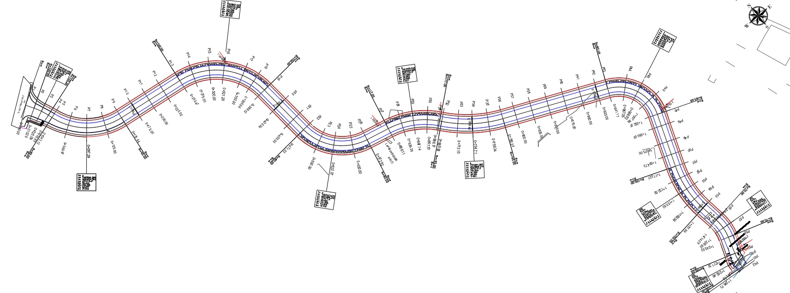
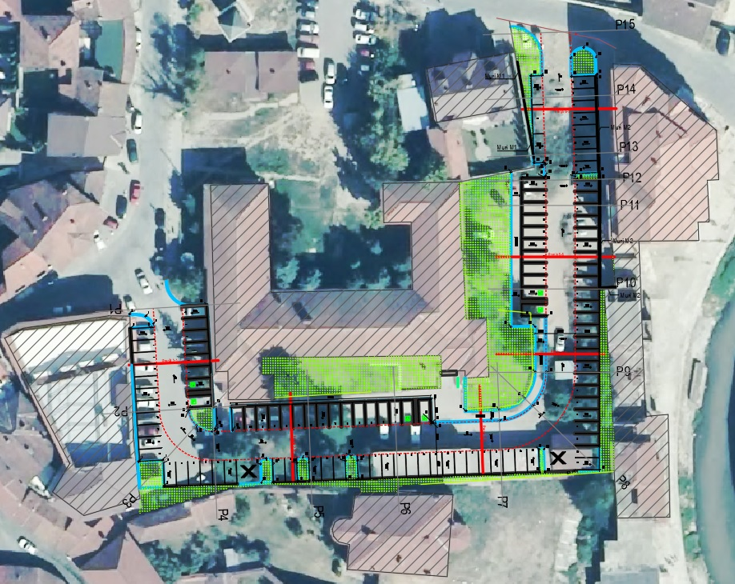

This road is in the center of Gjakova.
The route of the planned road follows the existing route with expansions on both sides. This road is equipped with sidewalks, parking lots, and green spaces in the middle of the traffic lanes.


- Road width B=2 x 5.20 m+10.87 m = 21.27 m
- Road length L=0+357.50 km
- Side walks b=2 x 3.00 m
This river is in the center of Gjakova.
The route of the planned rivers deviates the existing route. This river offers a good landscape, protection again floods and most importantly, is designed to be completely natural.

- River width B=26.80 m
- River length L=1+292.13 km
- Side walks b=2 x 2.50 m

It is located on the outskirts of the Municipality of Gjakova.
It consists of two road axes, which have been designed and constructed together with accompanying infrastructure such as sidewalks, water supply, sewage, and stormwater drainage.


- Road width B=6.00 m
- Road length L=1+090.35 km
- Side walks b=2 x 1.40 m
This road is located in the east side of Gjakova.
The route of the planned road is in the existing route. It connects the center of Gjakova with the peripheral villages.


- Road width B=7.00 m
- Road length L=1+292.13 km
- Side walks b=2 x 3.00 m
Is located in the center of the Gjakova’s city.
The area of the parking lot is 3892.50 sqrm.
It will serve as a parking lot for the staff of the family medicine facility in Gjakova and for the residents living nearby. This parking lot is designed with green spaces, granite tiles on the road where cars circulate, and concrete tiles in parking spaces.

